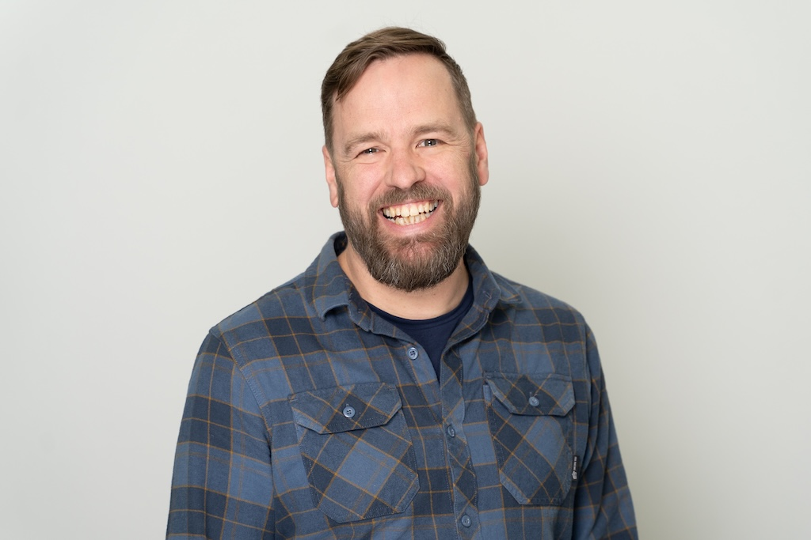

Christof Riedel
Power Platform Architect
Professional Summary
Experienced Power Platform Architect specializing in Microsoft technologies and enterprise solutions. Expert in designing and implementing complex business solutions using the Power Platform ecosystem. Passionate about digital transformation, solution architecture, and creating efficient, scalable applications that drive business value.
Core Technical Skills
Power Platform Expertise
- Power Apps Development
- Power Automate Workflows
- Dataverse / Power BI
- Custom Connectors
Enterprise Solutions
- Solution Architecture
- Dynamics 365 Integration
- Azure Services
- DevOps / ALM
Professional Focus
Enterprise Solutions Development
- Microsoft Power Platform customization and development
- Full-stack web application development using .NET Core and React
- Cloud-native solutions using Azure services
- DevOps implementation and CI/CD pipeline optimization
Professional Development
Continuously expanding expertise in modern development practices, cloud architecture, and emerging technologies. Active participant in developer communities and professional development initiatives.